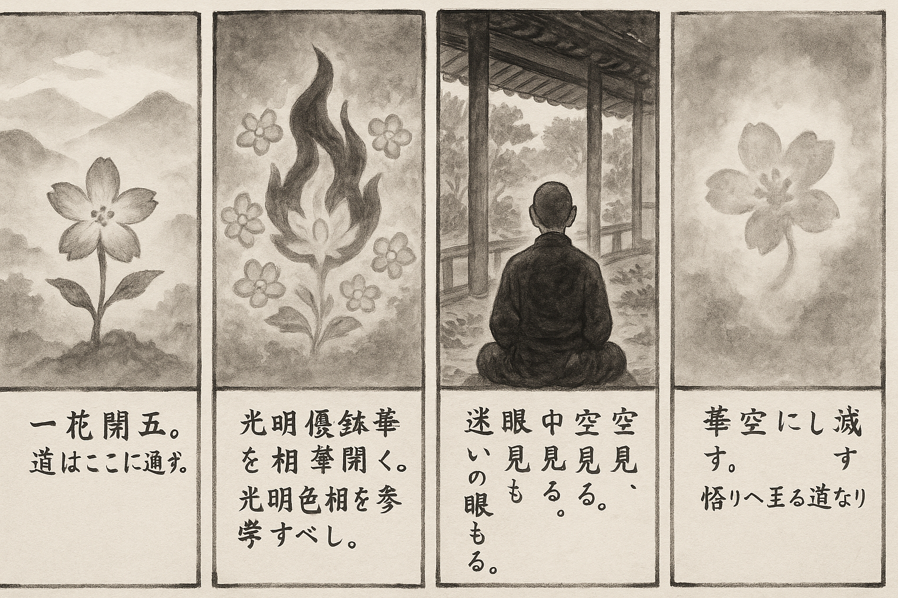

七十五巻 巻一覧
正法眼藏第14 空華
本ページの導入・語彙・深掘り・クイズは tools/regen_volume_intro_from_corpus.py が OpenAI API で生成したものです（入力は当巻冒頭原文の抜粋）。内容はモデル出力のため、重要箇所は必ず原文・教本と照合してください。
出典: https://shomonji.or.jp/zazen/doc/genzou.html
（ローカル生成の全文: 全文ページ）
この巻の位置（導入）
高祖道、一花開五葉、結果自然成。この華開の時節、および光明色相を參學すべし。
一華の重は五葉なり、五葉の開は一華なり。一華の道理の通ずるところ、吾本來此土、傳法救迷情なり。
語彙の足場
- 空華：空華とは、物事の本質が空であることを示す言葉であり、実体がないことを意味します。
- 自然成：自然成は、物事が自然に成り立つことを指し、無理なく結果が生じる様を表します。
- 優鉢羅華：優鉢羅華は、特定の花の名であり、象徴的に真理や悟りを表すことがあります。
- 翳眼：翳眼は、真実を見通すことができない状態を指し、迷いや誤解を象徴しています。
- 因果：因果とは、原因と結果の関係を表し、物事の成り立ちを理解するための基本的な概念です。
本文（冒頭・抜粋）
出典はリポジトリ内 doc/正法眼蔵.txt です。原文の参照元: https://shomonji.or.jp/zazen/doc/genzou.html
高祖道、一花開五葉、結果自然成。
この華開の時節、および光明色相を參學すべし。一華の重は五葉なり、五葉の開は一華なり。一華の道理の通ずるところ、吾本來此土、傳法救迷情なり。光色の尋處は、この參學なるべきなり。結果任儞結果なり、自然成をいふ。自然成といふは、修因感果なり。公界の因あり、公界の果あり。この公界の因果を修し、公界の因果を感ずるなり。自は己なり、己は必定これ儞なり、四大五蘊をいふ。使得無位眞人のゆゑに、われにあらず、たれにあらず。このゆゑに不必なるを自といふなり。然は聽許なり。自然成すなはち華開結果の時節なり、傳法救迷の時節なり。たとへば、優鉢羅華の開敷の時處は、火裏火時なるがごとし。鑽火焰火みな優鉢羅華の開敷處なり、開敷時なり。もし優鉢羅華の時處にあらざれば、一星火の出生するなし、一星火の活計なきなり。しるべし、一星火に百千朶の優鉢羅花ありて、空に開敷し、地に開敷するなり。過去に開敷し、現在に開敷するなり。火の現時現處を見聞するは、優鉢羅花を見聞するなり。優鉢羅華の時處をすごさず見聞すべきなり。
古先いはく、優鉢羅華火裏開。
しかあれば、優鉢羅華はかならず火裏に開敷するなり。火裏をしらんとおもはば、優鉢羅華開敷のところなり。人見天見を執して、火裏をならはざるべからず。疑著せんことは、水中に蓮花の生ぜるも疑著しつべし。枝條に諸華あるをも疑著しつべし。又疑著すべくは、器世間の安立も疑著しつべし。しかあれども疑著せず。佛祖にあらざれば花開世界起をしらず。華開といふは、前三三後三三なり。この員數を具足せんために、森羅をあつめていよよかにせるなり。
この道理を到來せしめて、春秋をはかりしるべし。ただ春秋に華果あるにあらず、有時かならず花果あるなり。華果ともに時節を保任せり、時節ともに花果を保任せり。このゆゑに百草みな華果あり、諸樹みな華果あり。金銀銅鐵珊瑚頗梨樹等、みな華果あり。地水火風空樹みな花果あり。人樹に花あり、人花に花あり、枯木に花あり。かくのごとくあるなかに、世尊道、虛空華あり。
しかあるを、少聞少見のともがら、空華の彩光葉華いかなるとしらず、わづかに空華と聞取するのみなり。しるべし、佛道に空華の談あり、外道は空華の談をしらず、いはんや覺了せんや。ただし、諸佛諸祖、ひとり空華地華の開落をしり、世界華等の開落をしれり。空華地華世界花等の經典なりとしれり。これ學佛の規矩なり。佛祖の所乘は空華なるがゆゑに、佛世界および諸佛法、すなはちこれ空華なり。
しかあるに、如來道の翳眼所見は空華とあるを傳聞する凡愚おもはくは、翳眼といふは、衆生の顚倒のまなこをいふ。病眼すでに顚倒なるゆゑに、淨虛空に空花を見聞するなりと消息す。この理致を執するによりて、三界六道、有佛無佛、みなあらざるをありと妄見するとおもへり。この迷妄の眼翳もしやみなば、この空華みゆべからず。このゆゑに空本無華と道取すると活計するなり。あはれむべし、かくのごとくのやから、如來道の空華の時節始終をしらず。諸佛道の翳眼空華の道理、いまだ凡夫外道の所見にあらざるなり。諸佛如來、この空華を修行して衣座室をうるなり、得道得果するなり。拈華し瞬目する、みな翳眼空花の現成する公案なり。正法眼藏涅槃妙心いまに正傳して斷絶せざるを翳眼空華といふなり。菩提涅槃、法身自性等は、空華の開五葉の兩三葉なり。
釋迦牟尼佛言、亦如翳人、見空中華、翳病若除、華於空滅（また翳人の空中の華を見るが如し、翳病若し除こほれば、華空に滅す）。
この道著、あきらむる學者いまだあらず。空をしらざるがゆゑに空華をしらず、空華をしらざるがゆゑに翳人をしらず、翳人をみず、翳人にあはず、翳人ならざるなり。翳人と相見して、空華をもしり、空華をもみるべし。空華をみてのちに、華於空滅をもみるべきなり。ひとたび空花やみなば、さらにあるべからずとおもふは、小乘の見解なり。空華みえざらんときは、なににてあるべきぞ。ただ空花は所捨となるべしとのみしりて、空花ののちの大事をしらず、空華の種熟脱をしらず。
いま凡夫の學者、おほくは陽氣のすめるところ、これ空ならんとおもひ、日月星辰のかかれるところを空ならんとおもへるによりて假令すらくは、空華といはんは、この淸氣のなかに、浮雲のごとくして、飛花の風にふかれて東西し、および昇降するがごとくなる彩色のいできたらんずるを、空花といはんずるとおもへり。能造所造の四大、あはせて器世間の諸法、ならびに本覺本性等を空花といふとは、ことにしらざるなり。又諸法によりて能造の四大等ありとしらず、諸法によりて器世間は住法位なりとしらず、器世間によりて諸法ありとばかり知見するなり。眼翳によりて空花ありとのみ覺了して、空花によりて眼翳あらしむる道理を覺了せざるなり。
しるべし、佛道の翳人といふは本覺人なり、妙覺人なり、諸佛人なり、三界人なり、佛向上人なり。おろかに翳を妄法なりとして、このほかに眞法ありと學することなかれ。しかあらんは小量の見なり。翳花もし妄法ならんは、これを妄法と邪執する能作所作、みな妄法なるべし。ともに妄法ならんがごときは、道理の成立すべきなし。成立する道理なくは、翳華の妄法なること、しかあるべからざるなり。悟の翳なるには、悟の衆法、ともに翳莊嚴の法なり。迷の翳なるには、迷の衆法、ともに翳莊嚴の法なり。しばらく道取すべし、翳眼平等なれば空花平等なり、翳眼無生なれば空華無生なり、諸法實相なれば翳花實相なり。過現來を論ずべからず、初中後にはかかはれず。生滅に罣礙せざるゆゑに、よく生滅をして生滅せしむるなり。空中に生じ、空中に滅す。翳中に生じ、翳中に滅す。華中に生じ、花中に滅す。乃至諸餘の時處もまたまたかくのごとし。
空華を學せんこと、まさに衆品あるべし。翳眼の所見あり、明眼の所見あり。佛眼の所見あり、祖眼の所見あり。道眼の所見あり、瞎眼の所見あり。三千年の所見あり、八百年の所見あり。百劫の所見あり、無量劫の所見あり。これらともにみな空花をみるといへども、空すでに品品なり、華また重重なり。
まさにしるべし、空は一草なり、この空かならず花さく、百草に花さくがごとし。この道理を道取するとして、如來道は空本無華と道取するなり。本無花なりといへども、今有花なることは、桃李もかくのごとし、梅柳もかくのごとし。梅昨無華、梅春有華と道取せんがごとし。しかあれども、時節到來すればすなはちはなさく花時なるべし、花到來なるべし。この花到來の正當恁麼時、みだりなることいまだあらず。
梅柳の花はかならず梅柳にさく。花をみて梅柳をしる、梅柳をみて花をわきまふ。桃李の花いまだ梅柳にさくことなし。梅柳の花は梅柳にさき、桃李の花は桃李にさくなり。空花の空にさくも、またまたかくのごとし。さらに餘草にさかず、餘樹にさかざるなり。空花の諸色をみて、空菓の無窮なるを測量するなり。空花の開落をみて、空花の春秋を學すべきなり。空花の春と餘花の春と、ひとしかるべきなり。空花のいろいろなるがごとく、春時もおほかるべし。このゆゑに古今の春秋あるなり。空花は實にあらず、餘花はこれ實なりと學するは、佛教を見聞せざるものなり。空本無華の説をききて、もとよりなかりつる空花のいまあると學するは、短慮少見なり。進歩して遠慮あるべし。
祖師いはく、華亦不曾生。この宗旨の現成、たとへば華亦不曾生、花亦不曾滅なり。花亦不曾花なり、空亦不曾空の道理なり。華時の前後を胡亂して、有無の戲論あるべからず。華はかならず諸色にそめたるがごとし、諸色かならずしも華にかぎらず。諸時また靑黄赤白等のいろあるなり。春は花をひく、華は春をひくものなり。
張拙秀才は、石霜の俗弟子なり。悟道の頌をつくるにいはく、
光明寂照遍河沙（光明寂照、河沙に遍し）。
この光明、あらたに僧堂佛殿廚庫山門を現成せり。遍河沙は光明現成なり、現成光明なり。
凡聖含靈共我家（凡聖含靈、共に我が家）。
凡夫賢聖なきにあらず、これによりて凡夫賢聖を謗ずることなかれ。
一念不生全體現（一念不生にして全體現ず）。
念念一一なり。これはかならず不生なり、これ全體全現なり。このゆゑに一念不生と道取す。
六根纔動被雲遮（六根纔かに動ずれば雲に遮へらる）。
六根はたとひ眼耳鼻舌身意なりとも、かならずしも二三にあらず、前後三三なるべし。動は如須彌山なり、如大地なり、如六根なり、如纔動なり。動すでに如須彌山なるがゆゑに、不動また如須彌山なり。たとへば、雲をなし水をなすなり。
斷除煩惱重増病（煩惱を斷除すれば重ねて病を増す）。
從來やまふなきにあらず、佛病祖病あり。いまの智斷は、やまふをかさね、やまふをます。斷除の正當恁麼時、かならずそれ煩惱なり。同時なり、不同時なり。煩惱かならず斷除の法を帶せるなり。
趣向眞如亦是邪（眞如に趣向するも亦た是れ邪なり）。
眞如を背する、これ邪なり。眞如に向する、これ邪なり。眞如は向背なり、向背の各各にこれ眞如なり。たれかしらん、この邪の亦是眞如なることを。
隨順世緣無罣礙（世緣に隨順して罣礙無し）。
世緣と世緣と隨順し、隨順と隨順と世緣なり。これを無罣礙といふ。罣礙不罣礙は、被眼礙に慣習すべきなり。
涅槃生死是空華（涅槃と生死と是れ空華）。
涅槃といふは、阿耨多羅三藐三菩提なり。佛祖および佛祖の弟子の所住これなり。生死は眞實人體なり。この涅槃生死は、その法なりといへども、これ空花なり。空華の根莖枝葉、花果光色、ともに空花の花開なり。空花かならず空菓をむすぶ、空種をくだすなり。いま見聞する三界は、空花の五葉開なるゆゑに不如三界、見於三界なり。この諸法實相なり、この諸法華相なり。乃至不測の諸法、ともに空花空果なり、梅柳桃李とひとしきなりと參學すべし。
大宋國福州芙蓉山靈訓禪師、初參歸宗寺至眞禪師問、如何是佛（大宋國福州芙蓉山靈訓禪師、初め歸宗寺の至眞禪師に參じて問ふ、如何ならんか是れ佛）。
歸宗云、我向汝道、汝還信否（我れ汝に向つて道はんに、汝また信ずるや否や）。
師云、和尚誠言、何敢不信（和尚の誠言、何ぞ敢て信ぜざらん）。
歸宗云、卽汝便是（卽ち汝便ち是なり）。
師云、如何保任（如何が保任せん）。
歸宗云、一翳在眼、空花亂墜（一翳眼に在れば、空花亂墜す）。
いま歸宗道の一翳在眼空花亂墜は、保任佛の道取なり。しかあればしるべし、翳花の亂墜は諸佛の現成なり、眼空の花果は諸佛の保任なり。翳をもて眼を現成せしむ、眼中に空花を現成し、空花中に眼を現成せり。空花在眼、一翳亂墜。一眼在空、衆翳亂墜なるべし。ここをもて、翳也全機現、眼也全機現、空也全機現、花也全機現なり。亂墜は千眼なり、通身眼なり。おほよそ一眼の在時在處、かならず空花あり、眼花あるなり。眼花を空花とはいふ、眼花の道取、かならず開明なり。このゆゑに、
瑯瑘山廣照大師いはく、奇哉十方佛、元是眼中花。欲識眼中花、元是十方佛。欲識十方佛、不是眼中華。欲識眼中花、不是十方佛。於此明得、過在十方佛、若未明得、聲聞作舞、獨覺臨粧（奇なる哉十方佛、元より是れ眼中の花なり。眼中の花を識らんと欲はば、元是れ十方佛なり。十方佛を識らんと欲はば、是れ眼中華にあらず。眼中花を識らんと欲はば、是れ十方佛にあらず。此に於て明得すれば、過十方佛に在り。若し未だ明得せずは、聲聞作舞し、獨覺臨粧す）。
しるべし、十方佛の實ならざるにあらず、もとこれ眼中花なり。十方諸佛の住位せるところは眼中なり、眼中にあらざれば諸佛の住處にあらず。眼中花は、無にあらず有にあらず、空にあらず實にあらず、おのづからこれ十方佛なり。いまひとへに十方諸佛と欲識すれば眼中花にあらず、ひとへに眼中花と欲識すれば十方諸佛にあらざるがごとし。かくのごとくなるゆゑに、明得未明得、ともに眼中花なり、十方佛なり。欲識および不是、すなはち現成の奇哉なり、大奇なり。
佛佛祖祖の道取する、空華地華の宗旨、それ恁麼の逞風流なり。空華の名字は經師論師もなほ聞及すとも、地華の命脈は、佛祖にあらざれば見聞の因緣あらざるなり。
地花の命脈を知及せる佛祖の道取あり。
大宋國石門山の慧徹禪師は、梁山下の尊宿なり。ちなみに僧ありてとふ、如何是山中寶（如何ならんか是れ山中の寶）。
この問取の宗旨は、たとへば、如何是佛（如何ならんか是れ佛）と問取するにおなじ、如何是道と問取するがごとくなり。
師いはく、空華從地發、蓋國買無門無（空華地より發け、蓋國買ふに門無し）。
この道取、ひとへに自餘の道取に準的すべからず。よのつねの諸方は、空花の空花を論ずるには、於空に生じてさらに於空に滅するとのみ道取す。從空しれる、なほいまだあらず。いはんや從地としらんや。ただひとり石門のみしれり。從地といふは、初中後つひに從地なり。發は開なり。この正當恁麼のとき、從盡大地發なり、從盡大地開なり。
蓋國買無門は、蓋國買はなきにあらず、買無門なり。從地發の空華あり、從花開の盡地あり。
しかあればしるべし、空華は、地空ともに開發せしむる宗旨なり。
正法眼藏空華第十四
爾時寛元元年癸卯三月十日在觀音導利興聖寶林寺示衆
図解（4コマ・AI生成）
教義の根拠は本文・出典に従い、漫画は比喩の補助に留めてください。

深掘り（読解の手掛かり）
- 一華の開は五葉であり、五葉の開は一華であるという関係が示されている。
- 空華の概念は、物事の本質が空であることを理解するための重要な教えである。
- 自然成は、修因感果の考え方に基づき、物事が自然に展開することを強調している。
- 翳眼を持つ者は、真実を見通すことができず、空華の本質を理解できない。
確認（形成評価）
各設問の下の「採点」で正誤を表示します（ブラウザ内のみ。ログは送りません）。